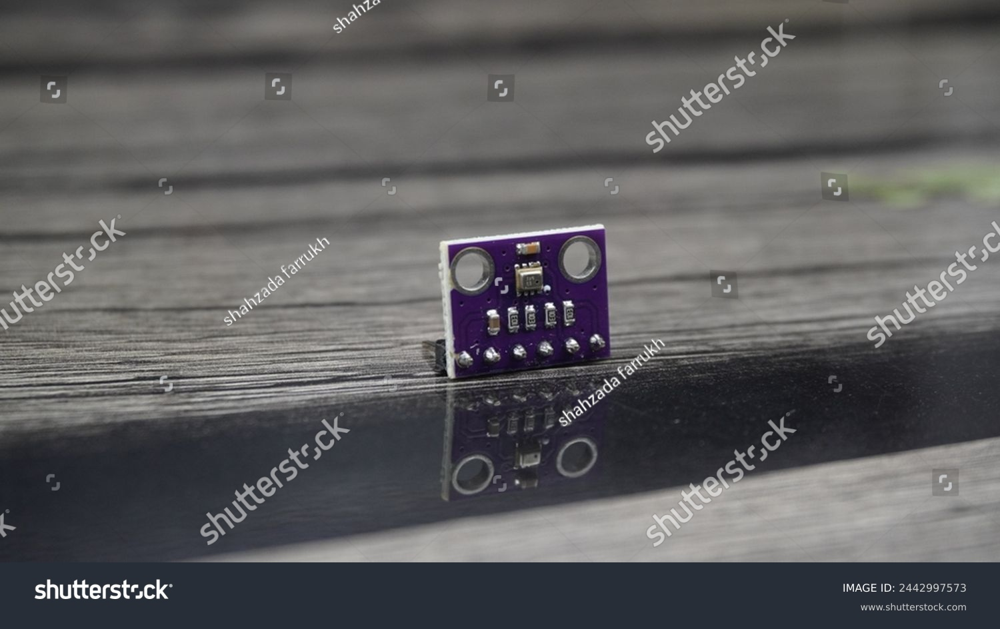

Sensors are devices that detect changes in the environment and convert them into signals for monitoring or controlling systems. They play a crucial role in modern technology, from smartphones to industrial automation.

Types of Sensors
Temperature Sensor:
Temperature sensors measure the heat level of an object or environment. These sensors are widely used in devices requiring thermal management or monitoring.
Uses: Controlling heating systems, refrigerators, air conditioners, and industrial ovens.
Examples: Thermocouples and thermistors.
Proximity Sensor:
Proximity sensors detect objects or obstacles without any physical contact. They use electromagnetic or ultrasonic waves to sense distances.
Uses: Automatic doors, smartphone touchless features, and robotic arms.
Examples: Infrared sensors, capacitive sensors.
Light Sensor:
Light sensors measure the intensity of light in an environment. They are widely used in devices that need to adjust to lighting conditions.
Uses: Automatic brightness control in smartphones, street lights, and security systems.
Examples: Photodiodes, phototransistors, and LDRs (Light Dependent Resistors).
Motion Sensor:
Motion sensors detect movement within a specific range. These sensors are vital in security systems and automation.
Uses: Intruder alarms, automatic doors, and gaming consoles.
Examples: Passive infrared (PIR) sensors, ultrasonic sensors.
Touch Sensor:
Touch sensors detect physical touch or proximity and are used in modern touch-based devices.
Uses: Smartphones, touchpads, and ATMs.
Examples: Capacitive and resistive touch sensors.
Pressure Sensor:
Pressure sensors measure the force applied by gases or liquids in a system. They are essential in monitoring safety-critical environments.
Uses: Automotive tire pressure systems, water pumps, and aviation altimeters.
Examples: Barometers and piezoresistive sensors.
சென்சார்கள்
வெப்பநிலை சென்சார் (Temperature Sensor):
வெப்பநிலை சென்சார்கள் சூழலின் வெப்பநிலையை கணக்கிடுகிறது. இவை வெப்ப மேலாண்மைக்கு முக்கியமாக பயன்படுகின்றன.
பயன்பாடுகள்: ஹீட்டிங் அமைப்புகள், ஃப்ரிட்ஜுகள் மற்றும் ஏர் கண்டிஷன்களில்.
உதாரணம்: தெர்மோகோப்பிள்கள், தெர்மிஸ்டர்கள்.
நெருக்கம் சென்சார் (Proximity Sensor):
இவை பொருள்களை தொடாதே கண்டறிகின்றன. வெவ்வேறு அலுமினியம் அல்லது அலறல் அலைகளை பயன்படுத்துகின்றன.
பயன்பாடுகள்: தானியங்க கதவுகள், ரோபோல் அமைப்புகள்.
உதாரணம்: இன்ஃப்ராரெட் சென்சார், கெப்பாசிட்டிவ் சென்சார்.
ஒளி சென்சார் (Light Sensor):
ஒளியின் தீவிரத்தை அளவிட பயன்படும்.
பயன்பாடுகள்: தானியங்கு ஒளி மின்சாரம், சாலைகளின் விளக்குகள்.
இயக்கம் சென்சார் (Motion Sensor):
கடந்து செல்லும் சுழற்சியை கண்டறிகிறது.
பயன்பாடுகள்: பாதுகாப்பு அமைப்புகள்.
தொட்டு சென்சார் (Touch Sensor):
உரத்தை தொடுதலை கண்டறிகிறது.
பயன்பாடுகள்: ஸ்மார்ட்போன்கள்.
அழுத்தம் சென்சார் (Pressure Sensor):
காற்று அல்லது திரவத்தின் அழுத்தத்தை கண்காணிக்க பயன்படுகிறது.
பயன்பாடுகள்: கார் டயர் அமைப்பு, நீர்ப்பாசன அமைப்பு.
உதாரணம்: பைரோமீட்டர், பைசோரெசிஸ்டிவ் சென்சார்.